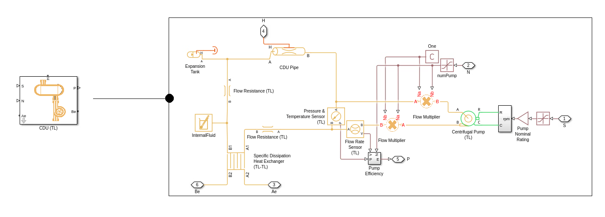

CDU (TL)
Contents

Use this block to simulate CDU for liquid cooling applications and when you want to model the TL domain on CDU heat exchanger external side, ie. the side that connects to other facility components. The internal liquid cooling loop is exposed as a thermal node to connect to the PDU Racks block. Ports S and N are used to control speed and the number of pumps that the CDU uses. Flow Multipliers are used to change the flow rate based on the value specified at port N. TL nodes Ae and Be connect to external network or facilities. Thermal node H connects to data center PDU Rack thermal node. Specific Heat Exchanger (TL-TL) block is used to model the CDU heat exchanger.
Heat Exchanger
- External liquid loop mass flow rate vector (kg/s), extFluidMdot, specified as a scalar value.
- External liquid loop pressure drop vector (kPa), extFluidPrDrop, specified as a scalar value.
- External liquid volume in heat exchanger (m^3), extFluidVol, specified as a scalar value.
- External liquid loop pipe cross-sectional area (m^2), extFluidPipeArea, specified as a scalar value.
- Internal liquid loop mass flow rate vector (kg/s), intFluidMdot, specified as a scalar value.
- Internal liquid loop pressure drop vector (kPa), intFluidPrDrop, specified as a scalar value.
- Internal liquid volume in heat exchanger (m^3), intFluidVol, specified as a scalar value.
- Internal liquid loop pipe cross-sectional area (m^2), intFluidPipeArea, specified as a scalar value.
- Specific dissipation table, SD[mdot_int,mdot_ext] (kW/K), spDissipationTbl, specified as a scalar value.
- Effective pipe length for rack cooling (m), effPipeLen, specified as a scalar value.
Pumps
- Reference capacity vector for each pump (m^3/s), pumpCapacityVec, specified as a scalar value.
- Reference head vector for each pump (m), pumpRefHeadVec, specified as a scalar value.
- Reference brake power vector (kW), pumpRefBrkPowVec, specified as a scalar value.
- Electrical efficiency vector, 0-1 (-), pumpEff, specified as a scalar value.
- Total number of pumps (-), nPumps, specified as a scalar value.
- Pump speed upper limit factor (-), speedLimFactor, specified as a scalar value.
- Pump nominal rating (rpm), pumpNominalRPM, specified as a scalar value.
- Impeller diameter scale factor (-), pumpImpellerDiaFactor, specified as a scalar value.
Initial Conditions
- Initial temperature (K), iniT, specified as a scalar value.
- Initial pressure (MPa), iniP, specified as a scalar value.
- Reference flow temperature (K), refT, specified as a scalar value.
- Reference flow pressure (MPa), refP, specified as a scalar value.
- Reference density for internal liquid (kg/m^3), refDensity, specified as a scalar value.